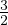

Liitmisvõte põhineb ideel, et kahe võrrandi kokkuliitmisel elimineerime ühe muutuja. Näiteks kui meil on võrrandid:
siis nende kokkuliitmisel saame võrrandi
seega x = 2 ja y = 1.
Pange tähele, et y taandub välja. Probleem tekib siis, kui kokkuliitmisel ükski
muutuja välja ei taandu. Sellisel juhul tuleb ühte võrranditest teisendada. Näiteks
järgmiste võrrandite kokkuliitmisel ei taandu kumbi muutuja välja.
Kui aga korrutame teise võrrandi mõlemat poolt arvuga , saame võrrandid
ning need omavahel liites tekib võrrand
millest tuleneb, et x = 2 ning y = 1.